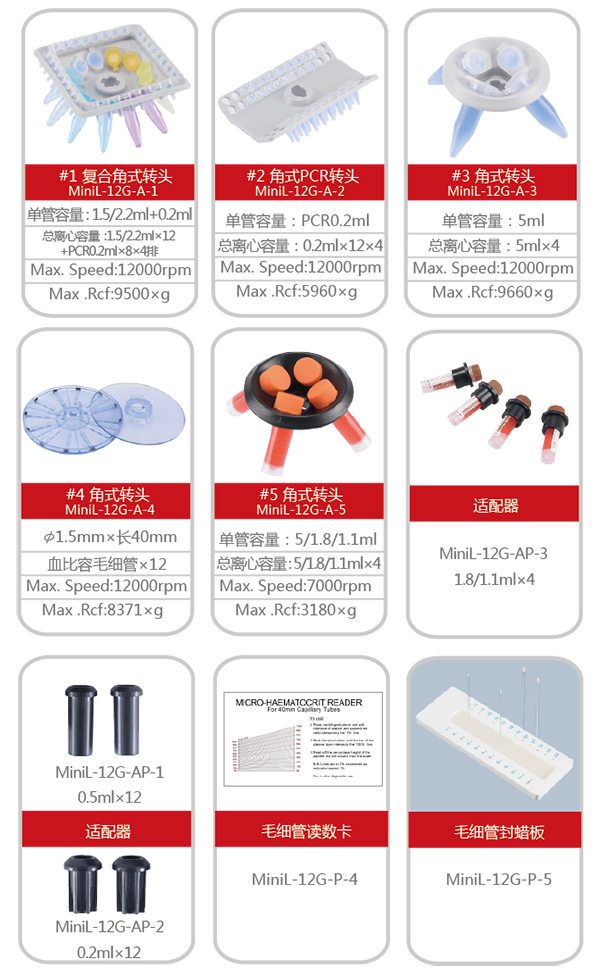
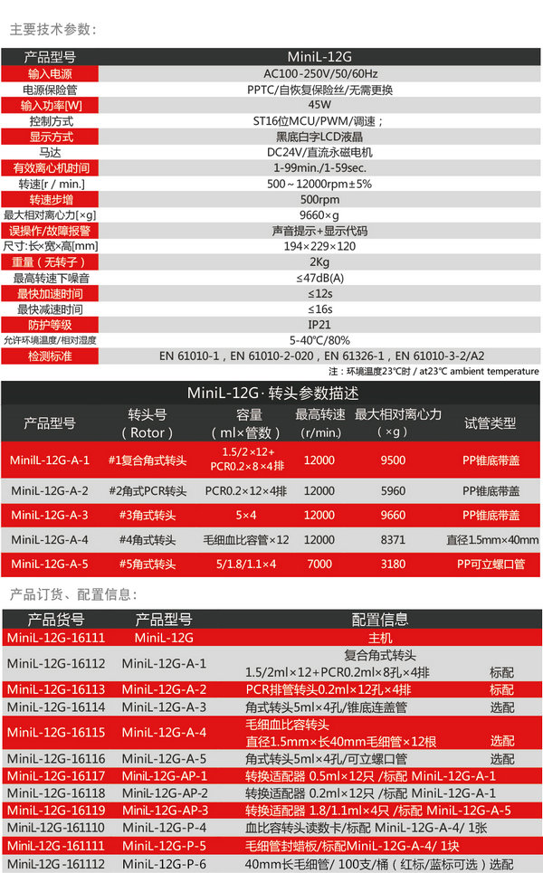

全国统一热线：86-021-57516069

空冷型大容量迷你离心机 医用离心机采用国际先进的设计理念和制造技术，外形流畅美观，结构紧凑稳固，秉承高度的通用性、简便的操作性等优点，同时具备“平稳启动"和“平稳制动"功能特性的离心机；该款迷你离心机非常适用于微管过滤及快速离心、微量血细胞分离、微生物样品处理、PCR实验分区离心、防止离心管中液体挂壁等现象，是处理小批量离心样品的首选。
更快的加/减速速率，在更短的时间内完成实验所需；
高强度的主机及转头材料，可抵御各种化学腐蚀，转头具有耐高温消毒功能；
RSS材质减震，运行更平稳，旋转空间为360°圆弧，无夹角、风阻小、温升小、超静音，整机噪音≤47dB；
门盖保护、超速和不平衡探测系统，可以对离心过程实时监控，确保仪器安全运行, 运转结束、出错及出现不平衡时，声音信号提示，同时停止运转，LCD显示结果代码；独特的转头卡扣式安装设计，不用任何工具即能方便更换转头，让实验人员更换转子更便捷、快速；
新颖的复合试管转头能兼容多种试管，在无需更换转头情况下满足实验基本需求；
采用先进可靠的PI高频全范围宽幅电源控制方案，符合世界各地电网电源，通过16位MCU运算PWM调速可更精确的控制电压、电流、转速及有效离心时间,保证其在恶劣的使用环境下，更加延长电机的使用寿命及电磁噪音；
可靠耐用的直流永磁电机，调速范围为更宽的500～12000rpm，精确度±5%
| 产品型号 | MiniL-12G | |||||||||
| 输入电源 | AC85-264V/50/60Hz | |||||||||
| 电源保险管 | PPTC/自恢复保险丝/无需更换 | |||||||||
| 输入功率[W] | 45W | |||||||||
| 控制方式 | ST16位MCU/PWM/调速； | |||||||||
| 显示方式 | 黑底白字LCD液晶 | |||||||||
| 马达 | DC24V/直流永磁电机 | |||||||||
| 有效离心机时间 | 1-99min./1-59sec. | |||||||||
| 转速[r／min.] | 500～12000rpm±5% | |||||||||
| 转速步增 | 500rpm | |||||||||
| 最大相对离心力[×g] | 9660×g | |||||||||
| 误操作/故障报警 | 声音提示+显示代码 | |||||||||
| 尺寸：长×宽×高[mm] | 194×229×120 | |||||||||
| 重量（无转子） | 2Kg | |||||||||
| 最高转速下噪音 | ≤47dB(A) | |||||||||
| 最快加速时间 | ≤12s | |||||||||
| 最快减速时间 | ≤16s | |||||||||
| 防护等级 | IP21 | |||||||||
| 允许环境温度/相对湿度 | 5-40℃/80% | |||||||||
| 检测标准 | EN 61010-1，EN 61010-2-020，EN 61326-1，EN 61010-3-2/A2 | |||||||||
| 注：环境温度23℃时／at23℃ ambient temperature | ||||||||||
| MiniL-12G转头参数描述 | ||||||||||
| 产品型号 | 转头号 （Rotor） | 容量 （ml×管数） | 最高转速 （r/min.） | 最大相对离心力（×g） | 试管类型 | |||||
| MinilL-12G-A-1 | #1复合角式转头 | 1.5/2.2×24+PCR0.2×8×4排 | 12000 | 9500 | PP锥底带盖 | |||||
| MiniL-12G-A-2 | #2角式PCR转头 | PCR0.2×12×4排 | 12000 | 5960 | PP锥底带盖 | |||||
| MiniL-12G-A-3 | #3角式转头 | 5×4 | 12000 | 9660 | PP锥底带盖 | |||||
| MiniL-12G-A-4 | #4角式转头 | 毛细血比容管×12 | 12000 | 8371 | 直径1.5mm×40 | |||||
| MiniL-12G-A-5 | #5角式转头 | 5/1.8/1.1×4 | 7000 | 3180 | PP可立螺口管 | |||||
| 产品货号 | 产品型号 | 配置信息 | ||||||||
| MiniL-12G-16111 | MiniL-12G | 主机 | ||||||||
| MiniL-12G-16112 | MiniL-12G-A-1 | 复合角式转头 | ||||||||
| 1.5/2.2ml×24+PCR0.2ml×8孔×4排 标配 | ||||||||||
| MiniL-12G-16113 | MiniL-12G-A-2 | PCR排管转头0.2ml×12孔×4排 标配 | ||||||||
| MiniL-12G-16114 | MiniL-12G-A-3 | 角式转头5ml×4孔/锥底连盖管 选配 | ||||||||
| MiniL-12G-16115 | MiniL-12G-A-4 | 毛细血比容转头 选配 | ||||||||
| 直径1.5mm×长40mm毛细管×12根 | ||||||||||
| MiniL-12G-16116 | MiniL-12G-A-5 | 角式转头5ml×4孔/可立螺口管 选配 | ||||||||
| MiniL-12G-16117 | MiniL-12G-AP-1 | 转换适配器 0.5ml×12只 /标配 MiniL-12G-A-1 | ||||||||
| MiniL-12G-16118 | MiniL-12G-AP-2 | 转换适配器 0.2ml×12只 /标配 MiniL-12G-A-1 | ||||||||
| MiniL-12G-16119 | MiniL-12G-AP-3 | 转换适配器 1.8/1.1ml×4只 /标配 MiniL-12G-A-5 | ||||||||
| MiniL-12G-161110 | MiniL-12G-P-4 | 血比容转头读数卡/标配 MiniL-12G-A-4/ 1张 | ||||||||
| MiniL-12G-161111 | MiniL-12G-P-5 | 毛细管封蜡板/标配MiniL-12G-A-4/ 1块 | ||||||||
| MiniL-12G-161112 | MiniL-12G-P-6 | 40mm长毛细管/ 100支/桶（红标/蓝标可选）选配 | ||||||||

 打印当前页
打印当前页 免费咨询：86-021-57516069
免费咨询：86-021-57516069 发邮件给我们：mag@magal.cn
发邮件给我们：mag@magal.cn 在线客服
在线客服